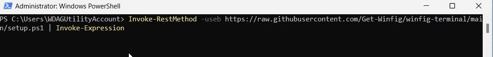
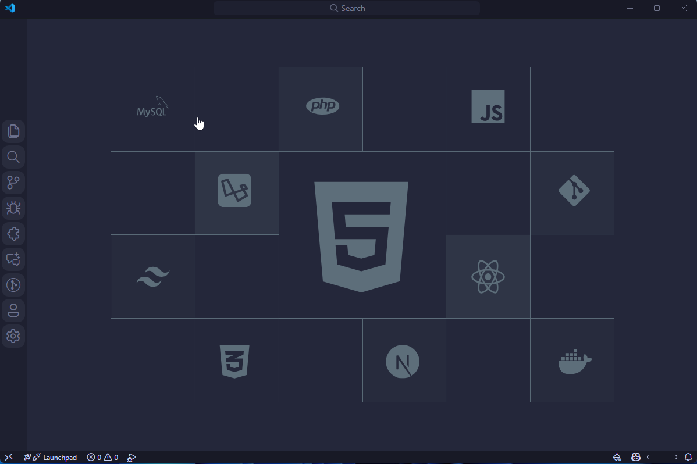

Winfig VsCode: Highly Customizable Code Editor

Overview¶
The Winfig VsCode is a Visual Studio Code settings, extensions and tasks pack designed to customize and optimize your VSCode experience for Windows 11. It consist of a curated set of extensions, settings, and tasks that enhance productivity, streamline workflows, and improve the overall development experience on Windows 11.
Features¶
- Optimized Settings: Pre-configured settings tailored for Windows 11 to enhance performance and usability.
- Curated Extensions: A selection of essential extensions that improve coding efficiency and add useful functionalities.
- Custom Tasks: Predefined tasks to automate common development workflows.
- User-Friendly Configuration: Easy to install and configure, making it accessible for both beginners and experienced developers.
- Animations and Theming: Beautiful animations and themes to enhance the visual experience.
Requirements¶
- Visual Studio Code installed on Windows 11.
- PowerShell 5+
- Git installed
- Administrator privileges for certain configurations
- Internet access for downloading dependencies
- Nerd Fonts for enhanced terminal appearance
Quick Install
- Visual Studio Code:
winget install --id Microsoft.VisualStudioCode -e - Git:
winget install --id Git.Git -e - FiraCode Nerd Fonts: Download from Nerd Fonts and install your favorite patched font
- Hack Nerd Fonts: Download from Nerd Fonts and install your favorite patched font
Installation Methods¶
One-line installation - Downloads and runs automatically:
Invoke-RestMethod -useb https://raw.githubusercontent.com/Get-Winfig/winfig-code/main/setup.ps1 | Invoke-Expression
Why Web Install?
- Always gets the latest version
- No manual download required
- Automatic script verification

Download and run manually for offline environments:
Set-ExecutionPolicy RemoteSigned -Scope CurrentUser
# Download from GitHub
Invoke-WebRequest -useb "https://raw.githubusercontent.com/Get-Winfig/winfig-code/main/setup.ps1" -OutFile "setup.ps1"
Unblock-File -Path .\setup.ps1
.\setup.ps1
Note
- Ensure you have the latest script version
- Manual updates required for new releases
- Verify script integrity before running

Post-Installation¶
- Restart VSCode to apply all configurations.
- Verify Extensions: Check that all recommended extensions are installed.
- Customize Further: Modify settings and keybindings as per your workflow.
- Explore Tasks: Familiarize yourself with the predefined tasks for automation.
- Enjoy Enhanced Productivity with your newly configured VSCode environment!
¶
Extensions¶
Winfig VsCode comes with a curated set of extensions to boost productivity and enhance your coding experience. Required extensions are installed automatically. Optional extensions can be installed with your permission during setup.
| Extension | Description | Marketplace |
|---|---|---|
| Catppuccin Theme | A soothing pastel theme for VSCode | Catppuccin.catppuccin-vsc |
| Fluent Icons | A set of fluent icons for VSCode | miguelsolorio.fluent-icons |
| VSCode Icons | A set of icons for VSCode | vscode-icons-team.vscode-icons |
| VsCode Animations | Beautiful animations for VSCode | BrandonKirbyson.vscode-animations |
| Custom CSS and JS Loader | Allows loading custom CSS and JS in VSCode | be5invis.vscode-custom-css |
| Extension | Description | Marketplace |
|---|---|---|
| Rainbow Brackets | Colorizes matching brackets with the same color | tal7aouy.rainbow-bracket |
| GitLens — Git supercharged | Supercharge the Git capabilities built into Visual Studio | eamodio.gitlens |
| Codespaces | Develop in a container, on a remote machine, or in the cloud | github.codespaces |
| GitHub Copilot | Your AI pair programmer | github.copilot |
| GitHub Copilot Chat | Your AI assistant in VS Code | github.copilot-chat |
| Gitignore Generator | Generate .gitignore files for your projects | piotrpalarz.vscode-gitignore-generator |
| GitHub Pull Requests and Issues | Manage GitHub PRs and Issues directly in VS Code | GitHub.vscode-pull-request-github |
| NPM Intellisense | Autocompletes npm modules in import statements | christian-kohler.npm-intellisense |
| Code Runner | Run code snippet or code file for multiple languages | formulahendry.code-runner |
| Colorize | Colorizes CSS colors in your editor | kamikillerto.vscode-colorize |
| Intelephense | PHP code intelligence for Visual Studio Code | bmewburn.vscode-intelephense-client |
| PHP Tools for Visual Studio Code | Professional PHP development environment | devsense.phptools-vscode |
| PHP Debug | Debug PHP with Xdebug | xdebug.php-debug |
| PHP DocBlocker | Generate PHPDoc blocks for your functions and methods | neilbrayfield.php-docblocker |
| ESLint | Integrates ESLint JavaScript into VS Code | dbaeumer.vscode-eslint |
| Stylelint | Modern CSS linter | stylelint.vscode-stylelint |
| Ruff | An extremely fast Python linter, written in Rust | charliermarsh.ruff |
| Python Black Formatter | Code formatter using 'Black' | ms-python.black-formatter |
| Python isort | Sort Python imports using isort | ms-python.isort |
| Prettier - Code formatter | Code formatter using prettier | esbenp.prettier-vscode |
| Shell Format | A shell script formatter for VS Code | foxundermoon.shell-format |
| Markdownlint | Markdown linting and style checking | davidanson.vscode-markdownlint |
| Markdown Preview Enhanced | Enhanced markdown preview | shd101wyy.markdown-preview-enhanced |
| Markdown All in One | All-in-one markdown toolkit | yzhang.markdown-all-in-one |
| vscode-pdf | PDF viewer for Visual Studio Code | tomoki1207.pdf |
| Code Screenshot | Take screenshots of your code | vkrsi.code-screenshot |
| Markdown Mermaid Preview | Preview mermaid diagrams in markdown files | bierner.markdown-mermaid |
| Excel Viewer | View Excel spreadsheets directly in VS Code | grapecity.gc-excelviewer |
| Docx Reader | View .docx files directly in VS Code | shahilkumar.docxreader |
| Emojisense | Autocomplete emoji names | bierner.emojisense |
| Todo Tree | View your TODOs and FIXMEs in a tree view | gruntfuggly.todo-tree |
| Rainbow CSV | Highlight CSV/TSV files and run SQL queries | mechatroner.rainbow-csv |
| Indent-Rainbow | Colorizes indentation for readability | oderwat.indent-rainbow |
| Error Lens | Enhance highlighting of errors and warnings | usernamehw.errorlens |
| Import Cost | Display import/require package size | wix.vscode-import-cost |
| Jupyter | Jupyter notebook support | ms-toolsai.jupyter |
| Remote - Containers | Develop inside a container | ms-vscode-remote.remote-containers |
| Tailwind CSS IntelliSense | Intelligent Tailwind CSS tooling | bradlc.vscode-tailwindcss |
| CSS Peek | Peek to CSS ID and class strings from HTML | pranaygp.vscode-css-peek |
| HTML CSS Support | CSS class name completion for HTML | ecmel.vscode-html-css |
| Live Server | Launch a local server with live reload | ritwickdey.liveserver |
| Auto Rename Tag | Automatically rename paired HTML/XML tags | formulahendry.auto-rename-tag |
| JavaScript (ES6) code snippets | Code snippets for JavaScript ES6 | xabikos.javascriptsnippets |
| Python | Python language support | ms-python.python |
| Pylance | Feature-rich language server for Python | ms-python.vscode-pylance |
| Python Indent | Improves Python indentation | kevinrose.vsc-python-indent |
| C/C++ | IntelliSense, debugging, and code browsing | ms-vscode.cpptools |
| Makefile Tools | Support for Makefile projects | ms-vscode.makefile-tools |
| CMake | CMake language support | twxs.cmake |
| CMake Tools | CMake integration for VS Code | ms-vscode.cmake-tools |
| C/C++ Extension Pack | Extensions for C/C++ development | ms-vscode.cpptools-extension-pack |
| Go | Rich Go language support | golang.go |
| Visual Studio IntelliCode | AI-assisted development | visualstudioexptteam.vscodeintellicode |
| Hugo Language and Syntax Support | Hugo static site generator support | budparr.language-hugo-vscode |
| YAML | YAML Language Support by Red Hat | redhat.vscode-yaml |
| TOML | TOML language support | be5invis.toml |
| XML Tools | XML Tools for Visual Studio Code | DotJoshJohnson.xml |
| JSON Tools | JSON Tools for Visual Studio Code | ZainChen.json |
💡 You can always add or remove extensions later from the VSCode Extensions Marketplace.
Tasks¶
Winfig VsCode includes predefined tasks to automate common development workflows. You can access and execute these tasks from the VSCode Command Palette or the Terminal menu.
| Task Name | Description |
|---|---|
| Git Init | Initialize a new Git repository |
| Git Pull | Pull latest changes from remote |
| Git Fetch | Fetch updates from remote |
| Git Push | Push commits to remote |
| Task Name | Description |
|---|---|
| Npm Install | Install dependencies using npm |
| Pnpm Install | Install dependencies using pnpm |
| Npm Audit Fix | Fix vulnerabilities in npm dependencies |
| Node Run Start | Run npm run start |
| Node Run Dev | Run npm run dev |
| Node Run Build | Run npm run build |
| Task Name | Description |
|---|---|
| NVM Use Node Version | Switch to a specific Node.js version |
| NVM Install Node Version | Install a specific Node.js version |
| NVM List Installed Versions | List all installed Node.js versions |
| Task Name | Description |
|---|---|
| Go Mod Init | Initialize a new Go module |
| Go Mod Tidy | Clean up Go module dependencies |
| Task Name | Description |
|---|---|
| Pip Install Requirements | Install Python dependencies from requirements.txt |
| Pip Freeze | Export current Python environment to requirements.txt |
| Python Venv Create | Create a new Python virtual environment |
| Task Name | Description |
|---|---|
| UV Install Requirements | Install Python dependencies using uv |
| UV Freeze | Export current environment using uv |
| Task Name | Description |
|---|---|
| Hugo New Site | Create a new Hugo site |
| Hugo New Post | Create a new Hugo post |
| Hugo Server | Start Hugo development server |
| Hugo Build | Build the Hugo site |
| Hugo Mod Init | Initialize Hugo modules |
| Hugo Mod Tidy | Clean up Hugo modules |
| Hugo Mod Get | Download Hugo module dependencies |
| Task Name | Description |
|---|---|
| Open in Browser | Open localhost on a specified port in browser |
| Open Current File in Browser | Open the current file in browser |
| Open Project Folder in Browser | Open index.html in project folder in browser |
| Open Custom URL | Open a custom URL in browser |
💡 Some tasks prompt for input (like module name, Node version, or port) when run. You can customize or add more tasks in your
tasks.jsonfile!
Tips & Usage Notes¶
Accessing the Menu Bar
If the menu bar is hidden or set to "toggle," simply press the Alt key once while hovering over the top bar to reveal it. This allows you to access menu items without permanently showing the menu bar.
Quick Navigation & Productivity
- Command Palette: Press Ctrl + Shift + P to access all commands and features.
- Integrated Terminal: Open with Ctrl + ` (backtick).
- Switch Tabs: Use Ctrl + Tab to cycle through open editors (if tabs are enabled).
- Zoom In/Out: Adjust the editor zoom level with Ctrl + = and Ctrl + -.
- Toggle Sidebar: Ctrl + B shows or hides the sidebar.
- Open Settings: Ctrl + , opens the settings UI.
Custom Appearance & Behavior
- The window title shows the current file, editor state, and Git branch for quick context.
- The theme, icons, and product icons are pre-set for a beautiful and consistent look.
- Editor tabs are hidden by default for a minimalist interface. You can enable them in settings if you prefer.
- Animations and smooth scrolling are enabled for a modern, fluid experience.
- Nerd Fonts are recommended for the best icon and glyph support.
Advanced Customization
- All settings are stored in
%USERPROFILE%\.Dotfiles\winfig-code\settings.json. - You can load your own custom CSS/JS by editing the
vscode_custom_css.importsarray in your settings. - For accessibility, you can enable or adjust features like font size, line height, and color customizations in the settings file.
Frequently Asked Questions (FAQ)¶
How do I update Winfig VsCode?
Invoke-RestMethod -useb https://raw.githubusercontent.com/Get-Winfig/winfig-code/main/setup.ps1 | Invoke-Expression
Where can I find the configuration files?
The configuration files are located in the %USERPROFILE%\.Dotfiles\winfig-code directory within your user profile folder.
Can I customize the settings after installation?
Yes, you can modify the settings, keybindings, and tasks to suit your preferences.
What if I encounter issues during installation?
Ensure you have the required permissions and dependencies. Check the GitHub Issues page for known problems and solutions.
How do I access the menu bar if it's hidden?
If the menu bar is set to "toggle" or hidden, press the Alt key once while hovering over the top bar to temporarily reveal it.
How do I reset all settings to default?
Open the Command Palette (Ctrl + Shift + P), type Preferences: Open Settings (JSON), and manually remove or reset the custom settings. You can also delete %USERPROFILE%\.Dotfiles\winfig-code\settings.json and restart VSCode.
Where are my custom CSS/JS files loaded from?
Custom CSS/JS is loaded from the paths defined in the vscode_custom_css.imports array in your settings. By default, this is %USERPROFILE%\.Dotfiles\winfig-code\assets\custom.css and custom.js.
How do I enable editor tabs?
By default, tabs are hidden for a minimalist interface. To enable them, open settings and set "workbench.editor.showTabs": true.
How do I change the font or font size?
Edit the editor.fontFamily and editor.fontSize settings in your configuration file or through the VSCode settings UI.
How do I troubleshoot extension issues?
- Disable conflicting extensions one by one to isolate the problem.
- Check the extension's documentation for compatibility notes.
- Look for errors in the VSCode Output panel.
How do I update extensions?
Open the Extensions sidebar (Ctrl + Shift + X), then click the update button next to any extension with an available update.
Troubleshooting Guide¶
If you encounter any issues while using Winfig Terminal, here are some common problems and their solutions:
| Issue | Solution |
|---|---|
| Installation fails | Ensure you have administrator privileges and all dependencies are installed. |
| Extensions not installing | Check your internet connection and try running the installation script again. |
| VSCode not launching | Restart your computer and try launching VSCode again. |
| Performance issues | Disable unnecessary extensions and check your system resources. |
| Configuration not applying | Ensure you restart VSCode after installation to apply all settings. |
| Font rendering issues | Make sure you have installed a Nerd Font and set it as your terminal font in VSCode settings. |
| Task automation not working | Verify that the tasks are correctly defined in your tasks.json file. |
| Conflicts with existing settings | Backup your current settings and compare them with Winfig's settings to resolve conflicts. |
| Issues with specific extensions | Check the extension's documentation for compatibility and known issues. |
| Custom CSS/JS not loading | Ensure the paths in vscode_custom_css.imports are correct and the files are accessible. |
| VsCode Says it is corrupted | This is nothing to worry about. This Warning is bacause of loading Custom Css and Js Which VsCode Do no likes |